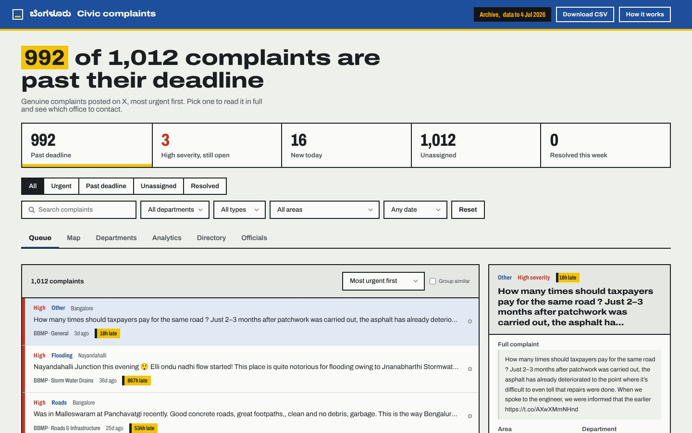

ಬೆಂಗಳೂರು ನಾಗರಿಕ ದೂರುಗಳು
Bengaluru civic complaints
1,012 on record
People in Bengaluru report potholes, power cuts and overflowing garbage on X every day. Civic Issue India reads those posts, keeps the genuine complaints, and sends each one to the office responsible for that ward.
4,989 posts read. 1,012 kept as real complaints. 369 wards matched to their officials.
How a post becomes a ticket
-
Read
Nine searches on X watch for roads, water, power, garbage, flooding, parks and traffic in Bengaluru. Each run only fetches posts newer than the last.
Searches include pothole, BESCOM, water cut, garbage, waterlogged and traffic signal.
-
Filter
Keyword searches also catch news, campaigns and politicians' visits. An AI model reads every post and keeps only real complaints someone can act on.
Read4,989Kept1,012 -
Route
Each complaint is tagged to a neighbourhood and ward, matched to the right BBMP, BESCOM, BWSSB or traffic police contact, and given a deadline.
Example: a power cut in Koramangala goes to the BESCOM engineer for that ward.
The dashboard officials use
The most urgent complaints come first. Pick one to read it in full and see who to contact.

What people report
Genuine complaints by type.
By type
Neighbourhoods with the most complaints
Complaints each week
Who is responsible
In their own words
The most-shared complaints, exactly as posted.
Open to everyone, no account needed
Bengaluru first. Mumbai, Delhi, Chennai, Hyderabad and Pune are next.